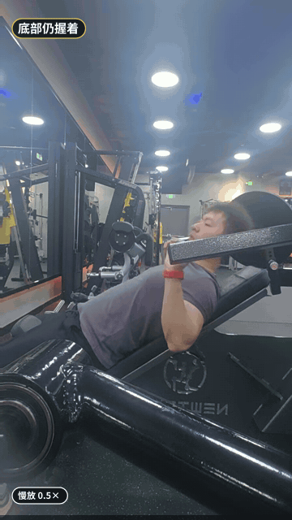
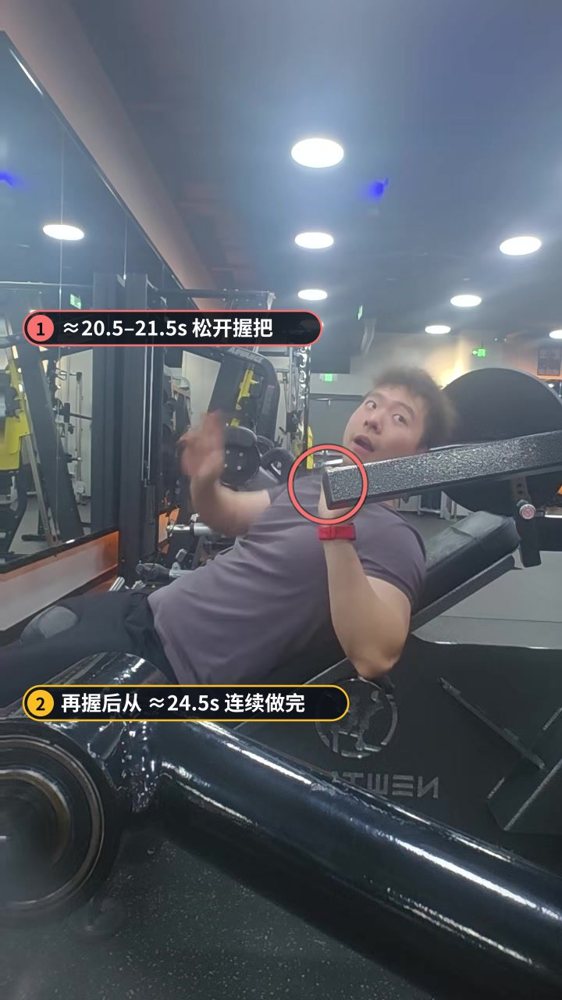
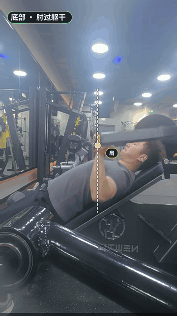
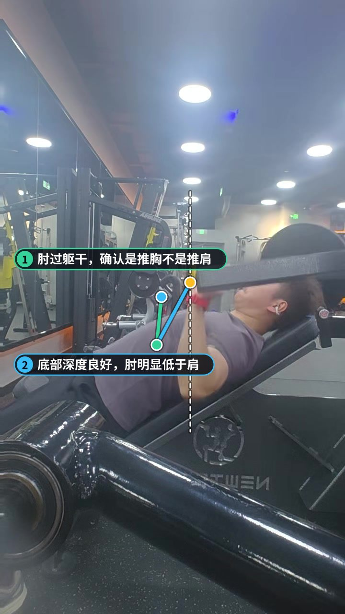

影响最大
中途松开握把（≈20.5–21.5s）
画面里约 20.5–21.5 秒双手离开握把，再握后从 ≈24.5s 才进入连续组。拉伸位或疲劳时脱手，肩关节突然卸载又加载，是这组受伤风险最高的瞬间。
怎么改感觉要掉就主动结束该组，或喊人辅助；不要在底部松手「缓一口气」。实在要停，先把重量放到安全位再松。


坐姿上斜器械推胸（不是推肩：底部肘会走到躯干后方）。约 7–24s 多停在底部，≈20.5–21.5s 有一次松手再握；随后连续 11 次。贴垫和深度不错，主要扣分在中途脱手与下放偏快。

上斜器械推胸的握把沿固定弧线向前上方走。判断「是不是误做成推肩」：看底部肘会不会过躯干平面。你的侧面画面里肘是过线的，动作定性没问题。

顶端：握把到肩偏角约 {force_top}°，上斜机自带前上轨迹，这个偏角合理。头背贴垫，没有明显借腰。

底部：肘在躯干后方，握把大约在上胸高度。深度足够，胸上份能被拉到；这是本组最大的技术亮点。
连续组每次肘都能过躯干平面，不是半程推。上斜刺激上胸，深度不到就只剩三角前束在干活。
头和背基本贴住上斜垫，没有明显抬臀或过度后仰。侧面看躯干角度稳定。
中途松手再握之后，还能连续做完约 11 次，说明重量选择和意志都不差——只是脱手这件事本身要改掉。
画面里约 20.5–21.5 秒双手离开握把，再握后从 ≈24.5s 才进入连续组。拉伸位或疲劳时脱手，肩关节突然卸载又加载，是这组受伤风险最高的瞬间。


连续组下放大多短于 1 秒，接近「掉回去」。上斜推胸的上胸刺激很吃离心控制，放太快等于少练一半。
约 7–24 秒大部分时间握把停在底部，真正连续做功大约 17 秒。长时间被动悬停既费肩，又稀释组密度。
连续组推起约 0.6–1.0 秒，后段略慢；下放多在 0.7–0.9 秒。时间误差约 ±0.2 秒。
逐帧读取，每个数字误差约 ±0.2 秒。第 1 次从静止起推，通常偏慢。
这是这个动作的第一条记录，之后的训练都会和它对比。
| 指标 | 本次 | 目标 | 评估 |
|---|---|---|---|
| 顶端力线偏角 | 17.1° | 0–20° | 达标 |
| 底部肘相对肩的深度 | -61.7° | -20–10° | 未达标 |
| 次数 | 11 次 | — | |
| 平均推起用时 | 0.8s | — | |
| 典型下放用时 | 0.8s | 2–3s | 未达标 |
| 最快一次下放 | 0.5s | 1.5–3s | 未达标 |
| 末次推起减速 | -38.9% | 20–50% | 未达标 |
要停就结束该组或请人辅助，不要在拉伸位松把。
下放 3 秒，触底即推，推起 1 秒。
减少底部挂机；调整座位/握距在开组前完成。
肘过躯干这一条继续保留，不要为了「更好看」主动做浅。